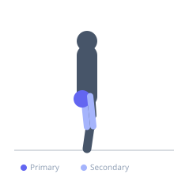
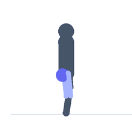

Exercise guide / Pigeon Pose
Pigeon Pose
Pigeon pose is a yoga-derived hip stretch that places the front leg in external rotation and the rear leg in extension, creating a simultaneous stretch for the hip external rotators and piriformis of the front leg and the hip flexors of the rear leg. It is widely regarded as one of the most effective static stretches for deep hip external rotator tightness and is commonly used by athletes and desk workers alike.
Primary muscles
gluteus maximus
gluteus medius
Secondary muscles
psoas major
adductor magnus
Stabilizers
erector spinae
Equipment
No Equipment (Bodyweight)


Starting position
- Begin in a tabletop position on hands and knees. Slide one knee forward toward the opposite hand and lower the shin to the floor at an angle. The rear leg extends straight back. The front shin may be more or less perpendicular to the torso depending on flexibility.
Setup
- Use a mat or padded surface. Those with tight hips may place a folded blanket or yoga block under the hip of the front leg for support.
Steps
- Step 1: From a tabletop or downward dog position, bring one knee forward and place it behind the same-side wrist.
- Step 2: Lower the shin and ankle to the floor, with the foot closer to or further from the groin depending on comfort.
- Step 3: Extend the rear leg straight behind you, keeping the hip square to the floor.
- Step 4: Lower the torso forward over the front shin, resting on forearms or forehead on the floor.
- Step 5: Breathe deeply and hold 60–120 seconds. Gently push back up and switch sides.
Coaching cues
- Press both hips equally toward the floor
- If the front hip is floating, place a prop underneath it
- Melt into the floor — do not fight the sensation
Breathing
- Breathe slowly and deeply. Allow each exhale to release tension in the hip.
Range of motion
- The front shin should be at the angle the hip allows — do not force a wider angle. Hold comfortably in the deepest position achievable without knee discomfort.
Tempo
- Hold 60–120 seconds per side. 2–3 rounds.
Common mistakes
- Letting the hip of the front leg collapse to the floor excessively, reducing the stretch
- Front shin perpendicular to the torso when hip flexibility does not allow it — the ankle should be closer to the groin initially
- Collapsing the torso to one side rather than squaring the hips
Safety
- Avoid if there is knee pain or medial knee discomfort — consider using the figure-four stretch on the back as an alternative
- Ensure the knee is not being torqued — the stretch sensation should be in the hip, not the knee
Training
- mobility: 2–3 reps
- mobility: 1–2 sets
- Rest: {'mobility': 15}